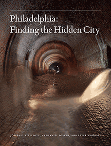

<body bgcolor="#FFFFFF" text="#000000" link="#0000FF" vlink="#CC0000" alink="#CC0000"><center><hr width="350" size="1" align="center" noshade>Revealing the physical and cultural intricacies of Philadelphia, from the intimate to the monumental<hr width="350" size="1" align="center" noshade><p><a href="https://cdcshoppingcart.uchicago.edu/Cart/ChicagoBook.aspx?ISBN=&&PRESS=temple" target="_top">Buy this book!</a> | <a href="https://cdcshoppingcart.uchicago.edu/Cart/Cart.aspx?PRESS=temple" target="_top">View Cart</a> | <a href="https://cdcshoppingcart.uchicago.edu/Cart/Cart.aspx?PRESS=temple" target="_top">Check Out</a></p><p></p></center><!--none//--><h1 class = "booktitle">Philadelphia</h1> <h1 class = "subtitle">Finding the Hidden City</h1>
<h3>Joseph E. B. Elliott, Nathaniel Popkin, and Peter Woodall </h3>
<p class="info">cloth: $40.00, Nov 17<BR>EAN:&nbsp;978-1-4399-1300-0<BR><font color=#990033>Not Yet Published Preorder</FONT><font size=-7><br>&nbsp;</font></p><p class="info"></p></td></tr></table>
<BR> <p class="info">192 pp<BR> 7.875 x 10.5<BR> 102 color photos, 8 halftones <p class="info"><font size=-7>&nbsp;</font></p><p class="info">
</P><BLOCKQUOTE><p><i>"With stunning photographs and vivid prose, </i>Philadelphia: Finding the Hidden City <i> takes us on a fascinating journey through the submerged urban realm and provides an essential Baedeker to Philadelphia's past by offering entr&#233;e to its hidden places of privilege, production, and prayer</i>."<br/>-<b>Michael Z. Wise</b>, author of <i> Capital Dilemma: Germany's Search for a New Architecture of Democracy</i><br>
</BLOCKQUOTE>
<p>Philadelphia possesses an exceptionally large number of places that have almost disappeared-from workshops and factories to sporting clubs and societies, synagogues, churches, theaters, and railroad lines. In <i>Philadelphia: Finding the Hidden City,</i> urban observers Nathaniel Popkin and Peter Woodall uncover the contemporary essence of one of America's oldest cities. Working with accomplished architectural photographer Joseph Elliott, they explore secret places in familiar locations, such as the Metropolitan Opera House on North Broad Street, the Divine Lorraine Hotel, Reading Railroad, Disston Saw Works in Tacony, and mysterious parts of City Hall.<br/><br/>Much of the real Philadelphia is concealed behind facades. <i>Philadelphia </i>artfully reveals its urban secrets. Rather than a nostalgic elegy to loss and urban decline, <i> Philadelphia </i>exposes the city's vivid layers and living ruins. The authors connect Philadelphia's idiosyncratic history, culture, and people to develop an alternative theory of American urbanism, and place the city in American urban history. The journey here is as much visual as it is literary; Joseph Elliott's sumptuous photographs reveal the city's elemental beauty.<br>
<P CLASS="top"><A HREF="#top">BACK TO TOP</A></P>&nbsp;
<BR>&nbsp;
<h2 class="inpageheading"><A NAME="reviews"></a>Reviews</h2>
<p><i>"From neighborhood churches and factories to former prisons and power plants, </i>Philadelphia: Finding the Hidden City <i> reveals an urban landscape and a way of life that have all but disappeared. Nathaniel Popkin and Peter Woodall unearth the soul of a city and recall a time when dreams were manifest in brick, carved wood, iron, and stone. Joseph Elliott's poignant photographs show the care and craftsmanship invested in the making of these spaces, evoking a sense of awe and mystery, and also a sadness for the fragility of this built environment, reminding us of the need to preserve a cultural history being swept away by indifference in the name of modernization</i>."<br/>-<b>Christopher Payne</b>, photographer and author of <i>Asylum: Inside the Closed World of State Mental Hospitals</i><br>
<P CLASS="top"><A HREF="#top">BACK TO TOP</A></P>&nbsp;<P>
<h2 class="inpageheading"><A NAME="contents"></a>Contents</h2><P><span style="font-family: 'Verdana';font-size: 13px;color: #221E1F;" >Introduction: Markers of the Hidden City <br/><br/>Part 1. </span><span style="font-family: 'Verdana';font-size: 13px;" >City of Infinite Layers <br/></span><span style="font-family: 'Verdana';font-size: 13px;color: #221E1F;" >Part 2. </span><span style="font-family: 'Verdana';font-size: 13px;" >City of Living Ruins <br/><br/></span><span style="font-family: 'Verdana';font-size: 13px;color: #221E1F;" >List of Plates <br/>Acknowledgments <br/>Appendix: Places Photographed <br/>Bibliography <br/>Author Biographies <br/>Index</span></P>
<P CLASS="top"><A HREF="#top">BACK TO TOP</A></P>
</P><BR>&nbsp;
<H2 class="inpageheading"><A NAME="author bio"></a>About the Author(s)</H2><p><b>Joseph E. B. Elliott </b>is a Professor of Art at Muhlenberg College and an Instructor at the University of Pennsylvania School of Design. He is the author of <i>The Steel: Photographs of the Bethlehem Steel Plant, 1989-1996</i> and (with Aaron V. Wunsch) <i>Palazzos of Power: Central Stations of the Philadelphia Electric Company, 1900-1930.</i><br>
<p><b>Nathaniel Popkin</b> is co-founder of <i> </i>the web magazine <i>Hidden City Daily</i> and senior writer for the documentary film <i> Philadelphia: The Great Experiment</i>. He is the author of <i>Song of the City: An Intimate History of the American Urban Landscape </i>and <i>The Possible City: Exercises in Dreaming Philadelphia</i>, as well as the novel <i> Lion and Leopard</i>. His literary criticism appears in the <i>Wall Street Journal</i> and other publications.<br>
<p><b>Peter Woodall</b> is a former newspaper reporter and producer for public radio. He co-founded the web magazine <i> Hidden City Daily</i> and is the project director of its parent organization, Hidden City Philadelphia.<br>
<P CLASS="top"><A HREF="#top">BACK TO TOP</A></P>
<p><h2 class="inpageheading"><a name="subjects"></a>Subject Categories</h2> <p><a href="http://www.temple.edu/tempress/philly.html" target="_top">Philadelphia Region</a> <br><a href="http://www.temple.edu/tempress/art.html" target="_top">Art and Photography</a> <br><a href="http://www.temple.edu/tempress/history.html" target="_top">History</a> <br><a href="http://www.temple.edu/tempress/urban.html" target="_top">Urban Studies</a> <br><a href="" target="_top"></a> </p>
</p>
<P>
</P>
<p align="center"><a href="https://cdcshoppingcart.uchicago.edu/Cart/ChicagoBook.aspx?ISBN=&&PRESS=temple" target="_top">Buy this book!</a> | <a href="https://cdcshoppingcart.uchicago.edu/Cart/Cart.aspx?PRESS=temple" target="_top">View Cart</a> | <a href="https://cdcshoppingcart.uchicago.edu/Cart/Cart.aspx?PRESS=temple" target="_top">Check Out</a></p><p><font face="Arial" size="1"><a href="copyright.html" onMouseOver="window.status='Web Copyright Policy';return true;" onMouseOut="window.status=''" title="Web Copyright Policy">&copy;</a> 2017 <a href="http://www.temple.edu" target="new" onMouseOver="window.status='Link to Temple University home page';return true;" onMouseOut="window.status=''" title="Link to Temple University home page">Temple University</a>. All Rights Reserved. http://www.temple.edu/tempress/titles/2381_reg.html</font></p>